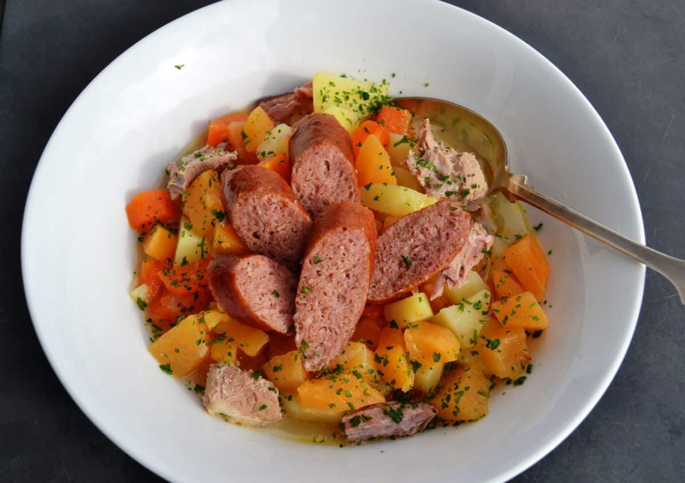

Steckrübeneintopf
22 de Agosto de 2019, Bogotá - Colombia El ingrediente principal es el nabicol cocido con zanahorias y Klüten (son bolas de pan muy similares a los Klöße, y que proporcionan una identidad característica a los platos del norte de Alemania). La carne de cerdo empleada es generalmente ahumada, como un Kasseler. La cocción de este plato es muy lenta (generalmente se hace a fuego lento) y puede llegar a durar entre dos y tres horas. En la actualidad se realiza en ollas de cocción lenta. Los ingredientes añadidos son apio, patata (a menudo es sobrecocida), puerro. En algunas ocasiones se añade en la parte final de la cocción una pera para que proporcione esa típica tonalidad de la cocina alemana del norte entre salado-dulce. El caldo (Jüchen) se suele degustar acompañado con mostaza o rábano. Se suele servir junto en un plato o en diferentes platos para cada comensal en el que se separa la carne de las verduras y los Klüten. Suele ser acompañado además con arándanos o compota de manzana.